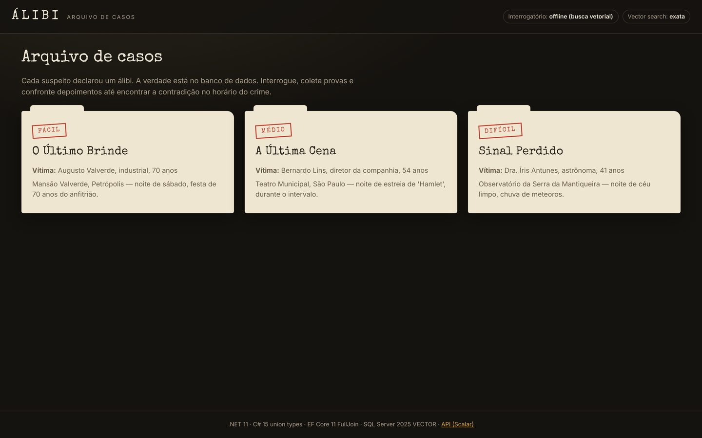
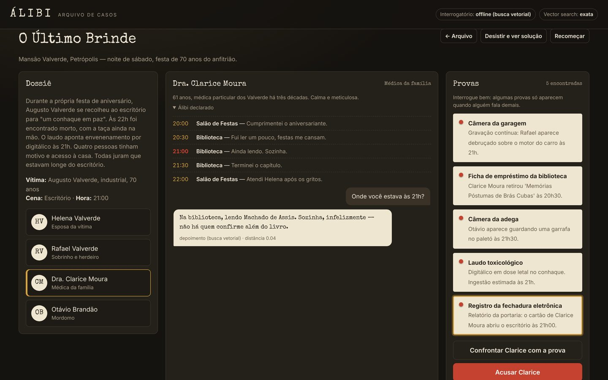
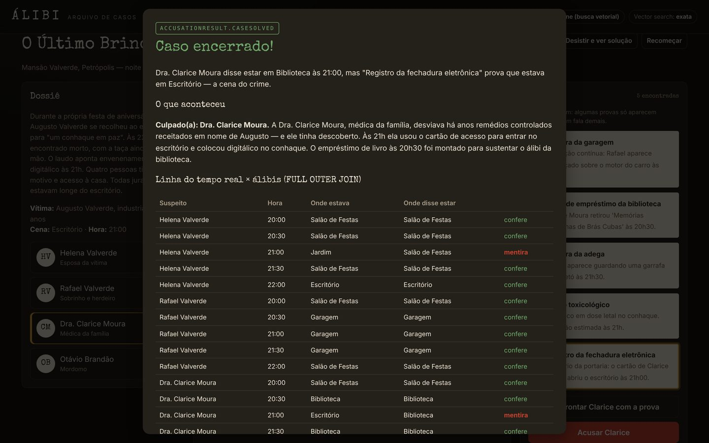

Álibi: I built a detective game to learn .NET 11
I wanted to learn what is new in .NET 11 and C# 15, but reading release notes was not sticking. So I did what usually works for me: I built something with it. The result is Álibi, a small detective game. You question the suspects, compare what they say with what really happened, and point at the culprit.
The game
There are three cases, from easy to hard: The Last Toast, The Last Scene and Lost Signal. Each one has four suspects, and everyone swears they were far from the crime scene.

You ask questions in your own words. Some evidence only shows up when a suspect talks too much, so asking the right thing matters. When you think you have it, you accuse someone.

Under the hood it is an ASP.NET Core API on .NET 11, EF Core 11 and SQL Server 2025, with a plain JavaScript front end served by the API itself. To try it, clone the repository and run docker compose up. Everything comes up with the three cases loaded, and you do not need any API key.
Union types for the accusation result
An accusation can end in four ways: you solved it, the alibi holds, you found a contradiction, or there is not enough evidence yet. In older C# I would use an enum with a few nullable fields and hope I did not forget a case. With C# 15 I just declared the possible results:
public union AccusationResult(CaseSolved, AlibiHolds, ContradictionFound, InsufficientEvidence);
var message = result switch
{
CaseSolved s => ...,
ContradictionFound x => ...,
AlibiHolds a => ...,
InsufficientEvidence i => ...,
};Notice there is no default. If I add a fifth result later, the code stops compiling until I handle it everywhere. I liked this a lot, and it is just as useful for business rules as it is for a game.
Catching lies with a FULL JOIN
This is my favourite part. The game keeps two lists: where each suspect really was (the timeline) and where they say they were (the alibi). To find the lies you need to see everything from both sides, including what shows up on only one of them. EF Core 11 now has FullJoin, which becomes a real FULL JOIN in SQL:
truth.FullJoin(
claims,
t => new { t.SuspectId, t.Time },
a => new { a.SuspectId, a.Time },
(t, a) => new CrossCheckProjection
{
RealLocation = t != null ? t.Location : null,
ClaimedLocation = a != null ? a.ClaimedLocation : null
});If both sides exist but the places differ, it is a lie. If only the timeline has the row, the suspect left that moment out. If only the alibi has it, they made it up. Before, I would have needed a left join, a right join and a union, or hand-written SQL.

Vector search to find the evidence
Nobody types the exact words of the script, so finding the right answer is a search by meaning. The suspects' lines and the clues have a vector(256) column in SQL Server 2025, with a DiskANN index set up from EF Core.
Not everything worked on the first try. The approximate search in EF Core 11 is still experimental and generates SQL that the SQL Server version in my container does not accept yet. So the code tries it first and, if it fails, falls back to an exact search with VectorDistance. With a few hundred lines per case you do not notice the difference, and the game keeps working.
The embeddings are generated offline, always the same way, so the same question always finds the same evidence.
And the AI?
If you set an ANTHROPIC_API_KEY, the suspects answer with Claude, through the official C# SDK plugged in as an IChatClient. Without a key, they answer with the scripted line closest to your question. Switching between the two is just configuration.
One decision I made early on: the AI never decides which evidence you get. That is always the vector search over the case data. The model gives the suspect a voice, and the database keeps the facts. That way every case stays fair, can always be solved, and is easy to test.
What I am taking with me: let the language model handle language, and keep the rules in code you can test.
What is next
I want to switch to the approximate vector search as soon as SQL Server supports it, write a few more cases, and maybe let players create their own. The code is on GitHub, and the wiki has more details on how it all fits together.